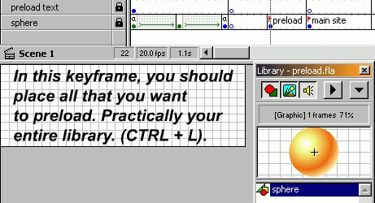

Creating a preloader


 Downloadable FLA
Downloadable FLA
Would you also like to create a preloader, so that when the user enters your page, you can show him a tiny animation or welcome text as the site loads? It's not so difficult. This is how it's done:
Step 1. Make a tiny animation you want to show as the site loads, at the beginning of your Flash movie.
Step 2. At the last keyframe of the animation, make a Goto command to the first frame of the animation.
Now it loops.
Step 3. Create a keyframe between the preloader and your site contents. Dump everything you want the preloader to load into this keyframe. Label it "Preload".
This is what it means, and why you should do it: "If frame is loaded" can only load one frame (we labelled the frame "preload"). When this frame is loaded, Flash will go on. Problem is, that YOU want to load the ENTIRE site, not just ONE FRAME. Solution: If the library was loaded, then most of the site would be loaded also, as all of your site uses what you have in your library... Therefore: "Dump" everything from the library into ONE FRAME. Label this frame Preload, and tell Flash to load THIS frame. Because when this frame is loaded, the entire library is loaded!
I've been asked to explain "DUMP": I simply meant, you "drag" all of your symbols into ONE keyframe in ONE layer. Open your library by pressing CTRL + L, and then select the first symbol. With your left mousebutton, drag and drop the symbol onto the stage, anywhere. It doesn't matter, as the movie will not show this frame. It will only load it, and then skip it. Repeat this process for every symbol in your library (moving onto the scene). Thereby, you have dumped everything from your library to one keyframe. This is useful, because then you will only have to preload ONE frame, to have your entire LIBRARY preloaded.

Step 3. At the first keyframe of the animation you created first, assign the action called "If frame is loaded". Now click "Label", and choose the label of the keyframe you just named "Preload".
Step 4. Immediately after the "If frame is loaded" action, and before the "End frame loaded", enter a "Goto" command you your main site content.
That's it!